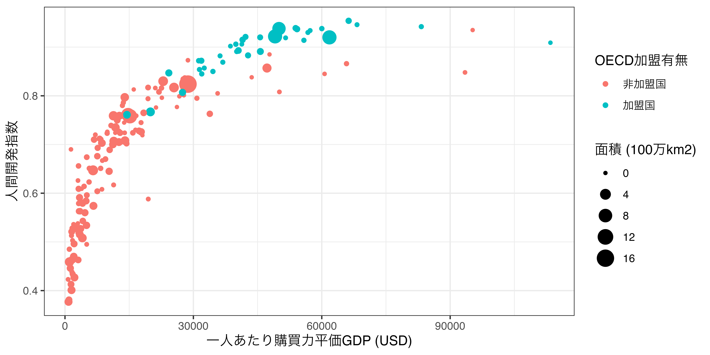
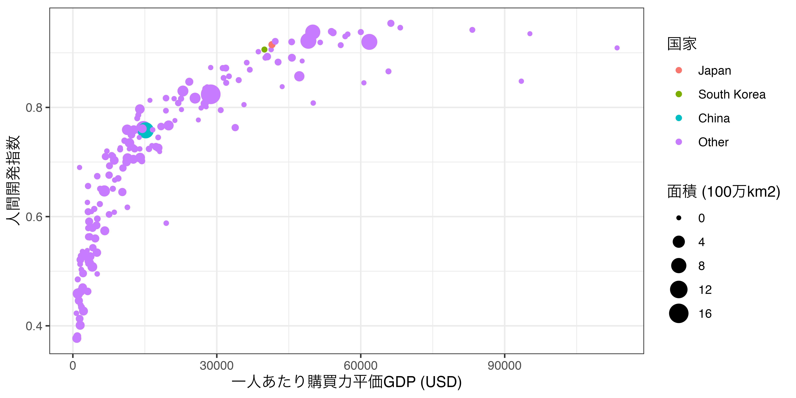
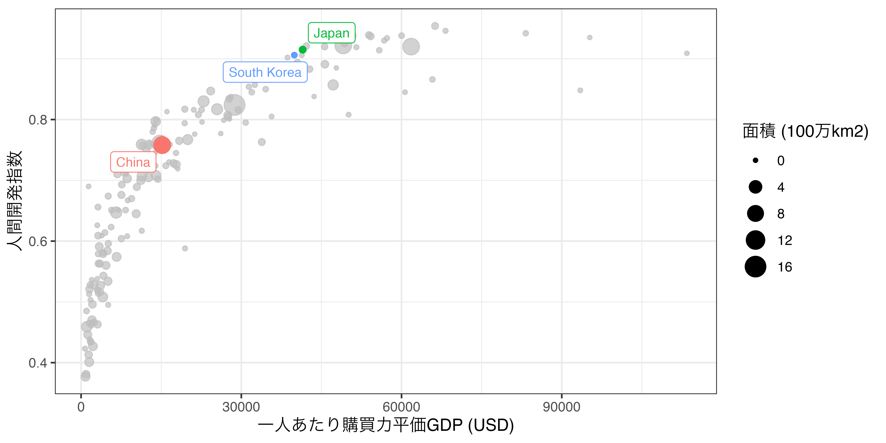

19 可視化 [基礎]
19.1 本章の内容
前章では{ggplot2}の仕組みおよびグラフィックの文法と良いグラフについて説明しました。本章では実際に簡単なグラフを作りながら{ggplot2}に慣れて頂きたいと思います。{ggplot2}で作れる図の種類は非常に多いですが、本章では、データサイエンスで頻繁に利用される以下の5つのプロットの作り方を紹介します。
その他の図ついては第21章、図の細かい修正については第20章で解説します。また、使用するPCの環境によっては図の文字化けが生じる可能性があります。この場合は第19.8章を参照してください（{ragg}パッケージを使えば一発で解決できます）。
19.2 実習用データ
実習の前に本章で使用するデータと{ggplot2}パッケージが含まれている{tidyverse}を読み込みます。
COVID19_Worldwide.csvの場合、普通に読み込むとTest_DayとTest_Totalが数値型であるにも関わらず、logical型変数として読み込まれます。read_csvはデフォルトだと最初の100行までのデータからデータ型を判断しますが、COVID19_Worldwide.csvの場合、Test_DayとTest_Totalの最初の100要素は全て欠損しており、判断不可となるため、自動的にlogical型として判断します。これを避けるために、guess_max = 10000を追加します。これは「データ型を判断するなら10000行までは読んでから判断しろ」という意味です。
これらの変数はSONGが適当にインターネットなどで集めたデータであり、あくまでも実習用データとしてのみお使い下さい。各変数の詳細は以下の通りです。
| 変数名 | 説明 | 備考 |
|---|---|---|
| Country | 国名 | |
| Population | 人口 | 人 |
| Area | 面積 | km$^2$ |
| GDP | 国内総生産 (GDP) | 100万米ドル |
| PPP | GDP (購買力平価): | 100万米ドル |
| GDP_per_capita | 一人あたりGDP | 米ドル |
| PPP_per_capita | 一人あたりGDP (購買力平価) | 米ドル |
| G7 | G7構成国 | 1:構成国, 0:構成国以外 |
| G20 | G20構成国 | 1:構成国, 0:構成国以外 |
| OECD | OECD構成国 | 1:構成国, 0:構成国以外 |
| HDI_2018 | 人間開発指数 | 2018年基準 |
| Polity_Score | 民主主義の程度 | Polity IVから; -10:権威主義〜10:民主主義 |
| Polity_Type | 民主主義の程度 (カテゴリ) | |
| FH_PR | 政治的自由の指標 | 2020年基準; Freedom Houseから |
| FH_CL | 市民的自由の指標 | 2020年基準; Freedom Houseから |
| FH_Total | 政治的自由と市民的自由の合計 | 2020年基準; Freedom Houseから |
| FH_Status | 総合評価 | F:完全な自由; PF:一部自由; NF:不自由 |
| Continent | 大陸 |
| 変数名 | 説明 |
|---|---|
| ID | ID |
| Country | 国名 |
| Date | 年月日 |
| Confirmed_Day | COVID-19 新規感染者数（人） |
| Confirmed_Total | COVID-19 累積感染者数（人） |
| Death_Day | COVID-19 新規死亡者数（人） |
| Death_Total | COVID-19 累積死亡者数（人） |
| Test_Day | COVID-19 新規検査数（人） |
| Test_Total | COVID-19 累積検査数（人） |
19.3 棒グラフ
棒グラフについては以下の2つのタイプについて説明します。
- ある変数の数の表す棒グラフ
- 各グループの統計量を表す棒グラフ
前者は「データ内にアフリカのケースはいくつあるか、アジアの行はいくつあるか」のようなものであり、後者は「大陸ごとの民主主義の度合いの平均値はいくつか」を出力するグラフです。
19.3.1 ケース数のグラフ
まず、Country_dfのContinent変数における各値の頻度数を棒グラフとして出してみましょう。表としてまとめる簡単な方法はtable()関数があります。
ケース数の棒グラフは、大陸名を横軸に、ケース数を縦軸にしたグラフです。それではグラフを作ってみます。データはCountry_dfであり、使う幾何オブジェクトはgeom_bar()です。ここで必要な情報は横軸、つまり大陸 (Continent)のみです。縦軸も「ケース数」という情報も必要ですが、{ggplot2}が勝手に計算してくれるので、指定しません。また、labs()レイヤーを追加します。labs()レイヤーはマッピング要素のラベルを指定するものです。これを指定しない場合、aes()内で指定した変数名がそのまま出力されます。

これで初めての{ggplot2}を用いたグラフが完成しましたね！
19.3.2 記述統計量のグラフ
次は記述統計量のグラフを出してみます。たとえば、大陸ごとに民主主義の指標の1つであるPolity Scoreの平均値を図示するとします。まずは、{dplyr}を使って、大陸ごとにPolity Score (Polity_Score)の平均値を計算し、Bar_df1という名で保存します。
Bar_df1 <- Country_df |>
group_by(Continent) |>
summarise(Democracy = mean(Polity_Score, na.rm = TRUE),
.groups = "drop")
Bar_df1# A tibble: 5 × 2
Continent Democracy
<chr> <dbl>
1 Africa 2.48
2 America 6.93
3 Asia 0.342
4 Europe 7.93
5 Oceania 7.25 それでは、このBar_df1を基にグラフを作りますが、今回は縦軸の情報も必要です。横軸はContinent、縦軸はDemocracy変数に指定します。そして、重要なものとしてstat引数を指定します。これはマッピングと関係なく、棒グラフの性質に関係するものなので、aes()の外側に位置します。これを指定しない場合、geom_bar()は基本的にはケース数を計算し、図示します。Passengerの値そのものを縦軸にしたい場合はstat = "identity"を指定します。後は、先ほどの棒グラフと同じです。
Bar_df1 |>
ggplot() +
geom_bar(aes(x = Continent, y = Democracy), stat = "identity") +
labs(x = "大陸", y = "Polity IV スコアの平均値") +
theme_minimal() 考えてみれば、大陸名が英語になっていますね。図内の言語は統一するのが原則であり、図の言語は論文やレポート、報告書の言語とも一致させるべきです。ここはBar_df1のContinent列の値を日本語に置換するだけでいいので、recode()関数を使います。recode()の使い方は第14.3章を参照してください。また、順番はローマ字順にしたいので、fct_inorder()を使って、Bar_df1における表示順でfactor化を行います。
Bar_df1 |>
mutate(Continent = recode(Continent,
"Africa" = "アフリカ",
"America" = "アメリカ",
"Asia" = "アジア",
"Europe" = "ヨーロッパ",
.default = "オセアニア"),
Continent = fct_inorder(Continent)) |>
ggplot() +
geom_bar(aes(x = Continent, y = Democracy), stat = "identity") +
labs(x = "大陸", y = "Polity IV スコアの平均値") +
theme_minimal()19.3.3 次元を追加する
記述統計量のグラフを見るとマッピング要素は2つであり、これは図が2つの次元、つまり大陸とPolity IVスコアの平均値で構成されていることを意味します。記述統計量のグラフはマッピング要素は1つですが、ケース数という次元が自動的に計算されるため2次元です。ここにもう一つの次元を追加してみましょう。たとえば、大陸ごとのPolity IVスコアの平均値を出しますが、これを更にOECD加盟有無で分けてみましょう。そのためには、まず大陸とOECD加盟有無でグループを分けてPolity IVスコアの平均値を計算する必要があります。
Bar_df2 <- Country_df |>
group_by(Continent, OECD) |>
summarise(Democracy = mean(Polity_Score, na.rm = TRUE),
.groups = "drop")
Bar_df2# A tibble: 9 × 3
Continent OECD Democracy
<chr> <dbl> <dbl>
1 Africa 0 2.48
2 America 0 6.55
3 America 1 8.6
4 Asia 0 -0.314
5 Asia 1 8
6 Europe 0 5.87
7 Europe 1 9.12
8 Oceania 0 4.5
9 Oceania 1 10 続いて、ContinentとOECD列を日本語に直します。また、順番を指定するためにfactor化しましょう。
Bar_df2 <- Bar_df2 |>
mutate(Continent = recode(Continent,
"Africa" = "アフリカ",
"America" = "アメリカ",
"Asia" = "アジア",
"Europe" = "ヨーロッパ",
.default = "オセアニア"),
Continent = fct_inorder(Continent),
OECD = recode(OECD,
"0" = "OECD非加盟国",
"1" = "OECD加盟国"),
OECD = fct_inorder(OECD))
Bar_df2# A tibble: 9 × 3
Continent OECD Democracy
<fct> <fct> <dbl>
1 アフリカ OECD非加盟国 2.48
2 アメリカ OECD非加盟国 6.55
3 アメリカ OECD加盟国 8.6
4 アジア OECD非加盟国 -0.314
5 アジア OECD加盟国 8
6 ヨーロッパ OECD非加盟国 5.87
7 ヨーロッパ OECD加盟国 9.12
8 オセアニア OECD非加盟国 4.5
9 オセアニア OECD加盟国 10 これで作図の準備ができました。それではこの新しい次元であるOECDをどのように表現すれば良いでしょうか。Continentは横軸の位置で表現され、Democracyは縦軸の位置として表現されているため、xとy以外の要素を考えてみましょう。棒グラフの場合、もう一つの軸が追加されるとしたらそれは、棒の色です。棒の色はfillで指定できます。colorでないことに注意してください。colorも指定可能ですが、これは棒の色ではなく、棒を囲む線の色であり、通常は「なし」となっています。それではfillをaes()内に書き加えます。
Bar_df2 |>
ggplot() +
geom_bar(aes(x = Continent, y = Democracy, fill = OECD),
stat = "identity") +
labs(x = "大陸", y = "Polity IV スコアの平均値") +
theme_minimal() なんか思ったものと違うものが出てきました。たとえば、アメリカ大陸の場合、Polity IVスコアの平均値が約15ですが、明らかにおかしいです。なぜならPolity IVスコアの最大値は10だからです。これは2つの棒が積み上げられているからです。アメリカ大陸においてOECD加盟国の平均値は8.6、非加盟国のそれは6.55であり、足したら15.15になります。これをずらすためにはpositionを設定する必要があります。しかし、positionというのはBar_df2の何かと変数の値を表すわけではないため、aes()の外側に入れます。そして、その値ですが、ここでは"dodge"を指定します。これは棒の位置が重ならないように調整することを意味します。このpositionのデフォルト値は"stack"であり、言葉通り「積み上げ」です。
Bar_df2 |>
ggplot() +
geom_bar(aes(x = Continent, y = Democracy, fill = OECD),
stat = "identity", position = "dodge") +
labs(x = "大陸", y = "Polity IV スコアの平均値") +
theme_minimal() これで私たちが期待した図が出来上がりました。「"dodge"の方が普通なのになぜデフォルトが"stack"か」と思う方もいるかも知れませんが、実は"stack"も頻繁に使われます。それはケース数のグラフにおいてです。
たとえば、大陸ごとにOECD加盟/非加盟国を計算してみましょう。
Bar_df3 <- Country_df |>
group_by(Continent, OECD) |>
summarise(N = n(),
.groups = "drop") |>
mutate(Continent = recode(Continent,
"Africa" = "アフリカ",
"America" = "アメリカ",
"Asia" = "アジア",
"Europe" = "ヨーロッパ",
.default = "オセアニア"),
Continent = fct_inorder(Continent),
OECD = recode(OECD,
"0" = "OECD非加盟国",
"1" = "OECD加盟国"),
OECD = fct_inorder(OECD))
Bar_df3# A tibble: 9 × 3
Continent OECD N
<fct> <fct> <int>
1 アフリカ OECD非加盟国 54
2 アメリカ OECD非加盟国 31
3 アメリカ OECD加盟国 5
4 アジア OECD非加盟国 39
5 アジア OECD加盟国 3
6 ヨーロッパ OECD非加盟国 23
7 ヨーロッパ OECD加盟国 27
8 オセアニア OECD非加盟国 2
9 オセアニア OECD加盟国 2これを可視化したのが以下の図です。
Bar_df3 |>
ggplot() +
geom_bar(aes(x = Continent, y = N, fill = OECD),
stat = "identity") +
labs(x = "大陸", y = "国家数") +
theme_minimal() この図はposition = "dodge"でも良いと思いますが、大陸内の比率を考えるならposition = "stack"でも問題ないでしょう。また、積み上げグラフの特性上、大陸ごとの国数の合計も一瞬で判別できるといった長所もあります。position = "dodoge"だと、それが難しいですね。むろん、積み上げ棒グラフはベースラインが一致したいため、避けるべきという人も多いですし、著者 (SONG)も同意見です。どの図を作成するかは分析者の責任で判断しましょう。
19.4 ヒストグラム
ヒストグラムは棒グラフと非常に形が似ていますが、横軸が大陸のような離散変数でなく、連続変数であるのが特徴です。連続変数をいくつの区間 (階級)に分け、その区間内に属するケース数 (度数)を示したのが度数分布表、そして度数分布表をかしかしたものがヒストグラムです。連続変数を扱っているため、棒間に隙間がありません。それでもケース数の棒グラフと非常に似通っているため、マッピングの仕方も同じです。異なるのは幾何オブジェクトがgeom_bar()でなく、geom_histogram()に変わるくらいです。世界の富がどのように分布しているかを確認するために、Country_dfのGDPのヒストグラムを作ってみます。
Country_df |>
ggplot() +
geom_histogram(aes(x = GDP)) +
labs(x = "国内総生産 (100万米ドル)", y = "度数") +
theme_minimal() ケース数の棒グラフのコードとほぼ同じです。横軸の数値が2.0e+07になっているのは2 \times 10^7、つまり2千万を意味します。普通に表記すると20000000になりますね。また、GDPの単位は100万ドルであるため、実際のGDPは20兆ドルになります。つまり、今のヒストグラムにおいて横軸の目盛りは5兆ドルになっています。この軸の数値を「0, 5e+06, 1e+07, 1.5e+07, 2e+07」から「0, 5, 10, 15, 20」 にし、X軸のラベルを「国内総生産 (100万米ドル)」から「国内総生産 (兆米ドル)」に替えてみましょう。ここで使うのはscale_x_continuous()関数です。これは横軸 (X軸)が連続変数 (continuous)の場合のスケール調整関数です。目盛りの再調整にはbreaksとlabels引数が必要です。breaksは新しい目盛りの位置、labelsは目盛りに表記する値です。それぞれベクトルが必要であり、breaksとlabelsの実引数の長さは必ず一致する必要があります。また、breaksは数値型ベクトルですが、labelsは数値型でも文字型でも構いません。
Country_df |>
ggplot() +
geom_histogram(aes(x = GDP)) +
labs(x = "国内総生産 (兆米ドル)", y = "度数") +
scale_x_continuous(breaks = c(0, 5000000, 10000000, 15000000, 20000000),
labels = c(0, 5, 10, 15, 20)) +
theme_minimal()これで一通りヒストグラムが完成しました。ほんの一部の国は非常に高いGDPを誇っていることが分かります。GDPが10兆ドル以上の国はアメリカと中国のみであり、5兆ドルを国まで拡大しても日本が加わるだけです。そもそも1兆ドルを超える国はデータには16カ国しかなく、90%以上の国が図の非常に狭い範囲内 (0~1兆ドル)に集まっていることが分かります。
この場合、2つの方法が考えられます。1つ目は方法は情報の損失を覚悟した上で、GDPが1兆ドル未満の国でヒストグラムを書く方法です。これはデータをggplot()関数を渡す前にfilter()を使って、GDPが100万未満のケースに絞るだけで出来ます。ただし、横軸の最大値が2000万でなく、100万になるため、目盛りを調整した方が良いでしょう。
Country_df |>
filter(GDP < 1000000) |>
ggplot() +
geom_histogram(aes(x = GDP)) +
labs(x = "国内総生産 (兆米ドル)", y = "度数") +
scale_x_continuous(breaks = seq(0, 1000000, 100000),
labels = seq(0, 1, 0.1)) +
theme_minimal() 2つ目の方法は横軸を対数化することです。GDPを底10の対数化 (常用対数)をすると、10兆のような非常に大きい値があっても比較的に狭い範囲内にデータを収めることが出来ます。たとえば、10を常用対数化すると1, 1000は3, 10000000は7になります。自然対数 (底が\(e\))も可能ですが、「読む」ためのグラフとしては底が10の方が読みやすいでしょう。横軸の変数が対数化されるということは、横軸のスケールを対数化することと同じです。そのためにはscale_x_continuous()内にtrans引数を指定し、"log10"を渡します。
Country_df |>
ggplot() +
geom_histogram(aes(x = GDP)) +
labs(x = "国内総生産 (兆米ドル)", y = "度数") +
scale_x_continuous(breaks = seq(0, 20000000, by = 5000000),
labels = seq(0, 20, by = 5),
trans = "log10") +
theme_minimal()対数化することによってGDPの分布が綺麗な形になりました。対数化すると横軸における目盛りの間隔が等間隔でないことに注意すべきです。0から5兆ドルの距離はかなり広めですが、5兆から10兆までの距離は短くなり、10兆から15兆までの距離は更に短くなります。したがって、この図から「世界のGDPは鐘型に分布している」と解釈することは出来ません。分布を可視化するには対数化する前の図が適します。
対数化のもう一つの方法はscale_x_continuous()の代わりにscale_x_log10()を使うことです。使い方はscale_x_continuous()と同じですが、trans = "log10"の指定は不要です。
Country_df |>
ggplot() +
geom_histogram(aes(x = GDP)) +
labs(x = "国内総生産 (兆米ドル)", y = "度数") +
scale_x_log10() +
theme_minimal() 横軸を修正するにはscale_x_continuous()と同様、breaksとlabels引数を指定します。
Country_df |>
ggplot() +
geom_histogram(aes(x = GDP)) +
labs(x = "国内総生産 (兆米ドル)", y = "度数") +
scale_x_log10(breaks = c(0, 1000, 10000, 100000, 1000000, 10000000),
labels = c(0, 0.001, 0.01, 0.1, 1, 10)) +
theme_minimal() 他にもcoord_*()関数群、つまり座標系の操作を用いて軸を対数化することも可能です。他にも、データをggplot()を渡す前に変数を対数化するのもありでしょう。プログラミングにおいてある結果にたどり着く方法は複数あるので、色々試してみるのも良いでしょう。
19.4.1 ヒストグラムの棒の大きさを調整する
棒グラフのようにもう一つの次元を追加してみましょう。まず、人間開発指数 (HDI_2018)の分布を示してみましょう。
Country_df |>
ggplot() +
geom_histogram(aes(x = HDI_2018)) +
labs(x = "人間開発指数 (2018)", y = "ケース数") +
scale_x_continuous(breaks = seq(0, 1, 0.1),
labels = seq(0, 1, 0.1)) +
theme_bw()
これでもヒストグラムとしては十分すぎるかも知れませんが、色々調整してみましょう。まずは、棒の枠線を白にしてみましょう。枠線はデータ内の変数に対応していないため、aes()の外側に入れます。枠線を指定する引数はcolorです。ちなみに棒の色を指定する引数はfillです。また、警告メッセージも気になるので、HDI_2018が欠損している行を除外します。
Country_df |>
filter(!is.na(HDI_2018)) |>
ggplot() +
geom_histogram(aes(x = HDI_2018), color = "white") +
labs(x = "人間開発指数 (2018)", y = "ケース数") +
scale_x_continuous(breaks = seq(0, 1, 0.1),
labels = seq(0, 1, 0.1)) +
theme_bw()人によってはこちらの方が見やすかも知れません。
これで一通りの作図は出来ましたが、これまで無視してきたメッセージについて考えてみましょう。
## `stat_bin()` using `bins = 30`. Pick better value with `binwidth`. これは「連続変数HDI_2018を30区間 (=階級)に分けました」という意味です。この区間数を調整する方法は2つあり、(1) 区間数を指定する、(2) 区間の幅を指定する方法があります。
区間数を指定することはすなわちヒストグラムの棒の数を指定することであり、bins引数で調整可能です。たとえば、棒の数を10個にするためにはgeom_histogram()内にbins = 10を指定します。むろん、棒の数もデータとは無関係であるため、aes()の外側に位置します。
Country_df |>
filter(!is.na(HDI_2018)) |>
ggplot() +
geom_histogram(aes(x = HDI_2018), color = "white", bins = 10) +
labs(x = "人間開発指数 (2018)", y = "ケース数") +
scale_x_continuous(breaks = seq(0, 1, 0.1),
labels = seq(0, 1, 0.1)) +
theme_bw()
数えてみると棒が10個だということが分かります。
他にも区間の幅を指定することも可能です。区間の幅は棒の幅と一致します。たとえば、棒の幅を0.1にしてみましょう。棒の幅はbinwidthで調整可能です。
Country_df |>
filter(!is.na(HDI_2018)) |>
ggplot() +
geom_histogram(aes(x = HDI_2018), color = "white", binwidth = 0.1) +
labs(x = "人間開発指数 (2018)", y = "ケース数") +
scale_x_continuous(breaks = seq(0, 1, 0.1),
labels = seq(0, 1, 0.1)) +
theme_bw()
ヒストグラムが出力されましたが、棒の幅がbinwidthで指定した0.1と一致することが分かります。たとえば、一番左の棒は0.35から0.45まで、つまり幅が0.1です。そして、一番右の棒は0.95から1.05に渡って位置します。ただし、ここでに疑問を持つ読者もいるでしょう「。なぜ0.3から0.4、0.4から0.5、…ではなく、0.35から0.45、0.45から0.55なのか」です。これは{ggplot2}の基本仕様です。ヒストグラムは度数分布表を基に作成されますが、本グラフの度数分布表は以下のようになります。
| から | まで | 度数 |
|---|---|---|
| 0.35 | 0.45 | 10 |
| 0.45 | 0.55 | 26 |
| 0.55 | 0.65 | 22 |
| 0.65 | 0.75 | 37 |
| 0.75 | 0.85 | 47 |
| 0.85 | 0.95 | 37 |
| 0.95 | 1.05 | 1 |
簡単に言うと、ヒストグラムの最初の棒は0を中央にした上で、棒の幅を0.1にしたとも言えます。これによってヒストグラムの境界線 (boundary)が、データより左右に0.05 (binwidthの半分)ずつ広くなります。もし、これを調整したい場合は、boundary引数を指定します。指定しない場合、boundaryは「棒の広さ / 2」となります。棒がデータの範囲を超えないようにするためには、geom_histogram()内にboundary = 0を指定します。
Country_df |>
filter(!is.na(HDI_2018)) |>
ggplot() +
geom_histogram(aes(x = HDI_2018), color = "white",
binwidth = 0.1, boundary = 0) +
labs(x = "人間開発指数 (2018)", y = "ケース数") +
scale_x_continuous(breaks = seq(0, 1, 0.1),
labels = seq(0, 1, 0.1)) +
theme_bw()ここまで抑えとけば、普段使われるヒストグラムは問題なく作れるでしょう。
19.4.2 密度を追加する
ヒストグラムには以下のように密度の表す線を同時に載せるケースもあります。
この密度の線を追加するにはgeom_density()という幾何オブジェクトを追加する必要があります。密度の線を示すには、横軸と縦軸両方の情報が必要です。横軸はHDI_2018で問題ないですが、縦軸はどうでしょう。縦軸には密度の情報が必要ですが、Country_dfにそのような情報はありません。幸い、{ggplot2}はy = ..density..と指定するだけで、自動的にHDI_2018のある時点における密度を計算してくれます。したがって、マッピングはaes(x = HDI_2018, y = ..density..)のように書きます。こうなるとマッピング要素xはgeom_histogram()とgeom_density()に共通するため、ggplot()に入れても問題ありません。
Country_df |>
filter(!is.na(HDI_2018)) |>
# 全幾何オブジェクトにおいてxを共有するため、ここでマッピング指定
ggplot(aes(x = HDI_2018)) +
geom_histogram(color = "white", binwidth = 0.05, boundary = 0) +
geom_density(aes(y = ..density..), size = 1) +
labs(x = "人間開発指数 (2018)", y = "密度") +
scale_x_continuous(breaks = seq(0, 1, 0.1),
labels = seq(0, 1, 0.1)) +
theme_bw() なんとも言えない微妙なグラフが出来ました。考えたものと全然違いますね。これはなぜでしょうか。それはgeom_density()は密度を表す一方、geom_histogram()は度数を表すからです。2つは単位が全然違います。したがって、どちらかに単位を合わせる必要があり、この場合はヒストグラムの縦軸を度数でなく、密度に調整する必要があります。ヒストグラムの縦軸を密度にするためには、y = ..density..を指定するだけです。こうなると、geom_histogram()とgeom_density()はxとyを共有するため、全部ggplot()内で指定しましょう。
Country_df |>
filter(!is.na(HDI_2018)) |>
ggplot(aes(x = HDI_2018, y = ..density..)) +
geom_histogram(color = "white", binwidth = 0.05, boundary = 0) +
geom_density(size = 1) +
labs(x = "人間開発指数 (2018)", y = "密度") +
scale_x_continuous(breaks = seq(0, 1, 0.1),
labels = seq(0, 1, 0.1)) +
theme_bw()
これで密度を表す線が出来ました。
19.4.3 次元を追加する
次元を追加するには棒グラフと同様、aes()内にマッピング要素を追加します。たとえば、OECD加盟有無によって人間開発指数の分布がどう異なるかを確認してみましょう。OECD変数は0/1であり、Rでは連続変数扱いになっているため、これを離散変数化するためには文字型かfactor型にする必要があります。ifelse()を使って、OECD == 1なら「OECD加盟国」、OECD == 0なら「OECD非加盟国」と置換したものをOECD2という列として追加します。そして、OECD2ごとに棒の色を変えるために、マッピング要素としてfillを追加します。
Country_df |>
mutate(OECD2 = ifelse(OECD == 1, "加盟国", "非加盟国")) |>
filter(!is.na(HDI_2018)) |>
ggplot() +
geom_histogram(aes(x = HDI_2018, fill = OECD2),
color = "white", binwidth = 0.05, boundary = 0) +
# fill要素のラベルをOECDに変更
labs(x = "人間開発指数 (2018)", y = "ケース数", fill = "OECD") +
scale_x_continuous(breaks = seq(0, 1, 0.1),
labels = seq(0, 1, 0.1)) +
theme_bw() ヒストグラムが出来上がりました。OECD加盟国の場合、人間開発指数が相対的に高いことが分かります。しかし、積み上げヒストグラムになっています。これはある階級においてOECD加盟国と非加盟国の比率を比較する際に有効ですが、OECD加盟国と非加盟国の分布の違いを見るにはやや物足りません。したがって、棒グラフ同様、position引数で棒の位置を調整します。ただし、ヒストグラムの場合、postion = "dodge"は向いていないので、ここではposition = "identity"を指定します。しかし、この場合、棒が重なってしまうと、一方の棒が見えなくなる可能性もあるので、alpha引数で棒の透明度を調整します。alphaの値は0から1までであり、0になると、完全透明になります。ここでは0.5くらいにしてみましょう。
Country_df |>
mutate(OECD2 = ifelse(OECD == 1, "OECD加盟国", "OECD非加盟国")) |>
filter(!is.na(HDI_2018)) |>
ggplot() +
geom_histogram(aes(x = HDI_2018, fill = OECD2),
color = "white", alpha = 0.5, position = "identity",
binwidth = 0.05, boundary = 0) +
labs(x = "人間開発指数 (2018)", y = "ケース数", fill = "OECD") +
scale_x_continuous(breaks = seq(0, 1, 0.1),
labels = seq(0, 1, 0.1)) +
theme_bw() これで2つのヒストグラムを綺麗にオーバーラッピングできました。また、先ほど紹介しましたgeom_density()オブジェクトを重ねることも可能です。
Country_df |>
mutate(OECD2 = ifelse(OECD == 1, "OECD加盟国", "OECD非加盟国")) |>
filter(!is.na(HDI_2018)) |>
# xはHDI_2018、yは密度 (..density..)とする
ggplot(aes(x = HDI_2018, y = ..density..)) +
geom_histogram(aes(fill = OECD2),
color = "white", alpha = 0.5, position = "identity",
binwidth = 0.05, boundary = 0) +
# OECD2ごとに異なる色を付ける。線の太さは1、凡例には表示させない
geom_density(aes(color = OECD2), size = 1, show.legend = FALSE) +
# 縦軸のラベルを「密度」に変更
labs(x = "人間開発指数 (2018)", y = "密度", fill = "OECD") +
scale_x_continuous(breaks = seq(0, 1, 0.1),
labels = seq(0, 1, 0.1)) +
theme_bw()この場合、OECD加盟国と非加盟国の密度をそれぞれ計算するため、ヒストグラムの見た目がこれまでのものと変わることに注意してください。
ここまで、次元拡張の方法としてヒストグラムのオーバーラッピングについて紹介しました。しかし、ヒストグラムを重なってしまうと、読みにくい人もいるかも知れません。オーバーラップ以外の方法はプロットを2つに分けることです。つまり、1つのプロットに小さいブロットを複数載せることであり、この小さいプロットをファセット (facet)と呼びます。これにはfacet_*()関数群の中の、facet_wrap()関数を使います。facet_wrap(~ 分ける変数名)を追加すると変数ごとにプロットを分割してくれます。ncolやnrow引数を指定すると、ファセットの列数や行数も指定可能です。
それではやってみましょう。facet_wrap(~ OECD2)を追加するだけです。2つのファセットを縦に並べるために、ncol = 1を追加します。2つのファセットを1列に並べるという意味です。
Country_df |>
mutate(OECD2 = ifelse(OECD == 1, "OECD加盟国", "OECD非加盟国")) |>
filter(!is.na(HDI_2018)) |>
ggplot() +
geom_histogram(aes(x = HDI_2018),
color = "white",
binwidth = 0.05, boundary = 0) +
labs(x = "人間開発指数 (2018)", y = "ケース数", fill = "OECD") +
scale_x_continuous(breaks = seq(0, 1, 0.1),
labels = seq(0, 1, 0.1)) +
facet_wrap(~ OECD2, ncol = 1) +
theme_bw()OECDは加盟/非加盟だけですから、オーバーラッピングされたヒストグラムで十分かも知れません。しかし、大陸のように、3つ以上のグループになると、オーバーラッピングよりもファセットで分けた方が効率的です。たとえば、大陸ごとの人間開発指数のヒストグラムを作ってみましょう。
Country_df |>
filter(!is.na(HDI_2018)) |>
ggplot() +
geom_histogram(aes(x = HDI_2018),
color = "white",
binwidth = 0.1, boundary = 0) +
labs(x = "人間開発指数 (2018)", y = "ケース数", fill = "OECD") +
scale_x_continuous(breaks = seq(0, 1, 0.1),
labels = seq(0, 1, 0.1)) +
facet_wrap(~ Continent, ncol = 3) +
theme_bw()
19.5 箱ひげ図
データの分布を示す際には、離散変数ならケース数 (度数)の棒グラフ、連続変数ならヒストグラムがよく使われますが、連続変数の場合、もう一つの方法があります。それが箱ひげ図です。箱ひげ図はヒストグラムより情報量がやや損なわれますが、データの中央値、四分位点（四分位範囲）、最小値と最大値の情報を素早く読み取れます。また、複数の変数、またはグループの分布を1つのプロットに示すにはヒストグラムより優れています。
まずは人間開発指数の箱ひげ図を出してみます。使用する幾何オブジェクトはgeom_boxplot()です。そして、指定するマッピング要素はyのみです。箱ひげ図から読み取れる情報は最小値・最大値、中央値、第1四分位点、第3四分位点ですが、これらの情報は縦軸として表現されます。それでは、とりあえず実際に作ってみましょう。
Country_df |>
filter(!is.na(HDI_2018)) |>
ggplot() +
geom_boxplot(aes(y = HDI_2018)) +
labs(y = "人間開発指数 (2018)")箱ひげ図の読み方は以下の通りです。
これで箱ひげ図は完成ですが、人間開発指数は0から1の相対を取るので、座標系の縦軸を調整してみましょう。座標系の操作はcoord_*()関数群を使いますが、現在使っているのは直交座標系（デカルト座標系）ですのでcoord_cartesian()を使います。ここで縦軸の上限と下限を指定する引数がylimであり、長さ2の数値型ベクトルが必要です。下限0、上限1ですので、ylim = c(0, 1)とします。
Country_df |>
filter(!is.na(HDI_2018)) |>
ggplot() +
geom_boxplot(aes(y = HDI_2018)) +
labs(y = "人間開発指数 (2018)") +
coord_cartesian(ylim = c(0, 1))まだまだ改善の余地はありますが、それなりの箱ひげ図の出来上がりです。しかし、一変数の箱ひげ図はあまり使われません。変数が1つだけならヒストグラムの方がより情報量は豊富でしょう。情報量が豊富ということはヒストグラムから（完璧には無理ですが）箱ひげ図を作ることは可能である一方、その逆は不可能か非常に難しいことを意味します。
ヒストグラムが力を発揮するのは複数の変数、または複数のグループごとの分布を比較する際です。先ほど、大陸ごとの人間開発指数の分布を確認するためにヒストグラムを5つのファセットで分割しました。箱ひげ図なら1つのグラフに5つの箱を並べるだけです。これは横軸を大陸 (Continent)にすることを意味します。先ほどのコードのマッピングにx引数を追加してみましょう。
Country_df |>
filter(!is.na(HDI_2018)) |>
ggplot() +
geom_boxplot(aes(x = Continent, y = HDI_2018)) +
labs(x = "大陸", y = "人間開発指数 (2018)") +
coord_cartesian(ylim = c(0, 1))いかがでしょうか。5大陸の分布を素早く確認することができました。ヨーロッパの場合、人間開発指数が高く、バラツキも小さいことが分かります。一方、アジアとアフリカはバラツキが非常に大きいですね。アメリカ大陸はバラツキは非常に小さいですが、極端に高い国や低い国が含まれています。このアメリカ大陸に3つの点がありますが、これは外れ値です。つまり、最小値より小さい、または最大値より大きいケースを表します。最小値より小さい、または最大値より大きいという表現に違和感を感じるかも知れません。実は一般的な箱ひげ図の最小値は「第1四分位点 - 1.5 \(\times\) 四分位範囲」より大きい値の中での最小値です。同じく最大値は「第3四分位点 + 1.5 \(\times\) 四分位範囲」より小さい値の中での最大値です。普通に分布している場合、ほとんどのケースは箱ひげ図の最小値と最大値の範囲内に収まりますが、極端に大きい値、小さい値が含まれる場合は箱ひげ図の最小値と最大値の範囲からはみ出る場合があります。
また、複数の箱を並べる際、それぞれの箱に異なる色を付ける場合があります。これはデータ・インク比の観点から見れば非効率的ですが、可読性を落とすこともないのでさほど問題はないでしょう。先ほどの箱ひげ図の場合、大陸ごとに異なる色を付けるにはマッピング要素としてfill = Continentを追加するだけです。この場合、色に関する凡例が自動的に出力されますが、既に横軸で大陸の情報が分かるため、この判例は不要でしょう。したがって、aes()の外側にshow.legned = FALSEを付けます。これは当該幾何オブジェクトに関する凡例を表示させないことを意味します。
Country_df |>
filter(!is.na(HDI_2018)) |>
ggplot() +
geom_boxplot(aes(x = Continent, y = HDI_2018, fill = Continent),
show.legend = FALSE) +
labs(x = "大陸", y = "人間開発指数 (2018)") +
coord_cartesian(ylim = c(0, 1))彩りどりでちょっとテンションが上がる箱ひげ図ができました。
19.5.1 個別のデータを表示する
箱ひげ図は複数のグループや変数の分布を素早く比較できる長所がありますが、中央値、最小値、最大値、第1・3四分位点、外れ値の情報しか持ちません。人によってはもうちょっと情報量を増やすために個々の観測値を点として示す場合もあります。点を出力する幾何オブジェクトは次節で紹介するgeom_point()です。以下の内容は散布図の節を一読してから読むのをおすすめします。
点の幾何オブジェクトにおける必須マッピング要素は点の横軸の位置と縦軸の位置、つまりxとyです。今回の場合、点の横軸が大陸（Continent）、縦軸は人間開発指数（HDI_2018）です。つまり、geom_boxplot()のマッピングと同じです。したがって、xとyはggplot()に入れておきます。あとは大陸ごとに店の色分けをしたいので、color引数をaes()内に指定します。また、点が重なる場合、読みづらくなる可能性があるため、alpha引数をaes()外に指定して透明度を調整します。また、箱ひげ図もある程度は透明にしないと、裏にある点が見えないため、こちらもalphaを調整します。
Country_df |>
filter(!is.na(HDI_2018)) |>
# 全幾何オブジェクトにおいてxとyは共有されるため、ここで指定
ggplot(aes(x = Continent, y = HDI_2018)) +
geom_point(aes(color = Continent), alpha = 0.5,
show.legend = FALSE) +
geom_boxplot(aes(fill = Continent),
alpha = 0.5, show.legend = FALSE) +
labs(x = "大陸", y = "人間開発指数 (2018)") +
coord_cartesian(ylim = c(0, 1)) 点が透明ではあるものの、それでも重なっている箇所は相変わらず読みにくいです。この場合有効な方法がジッター（jitter）です。これは点の位置に若干のノイズを付けることによって、点が重ならないようにすることです。ジッターの方法は2つありますが、ここではジッター専用の幾何オブジェクトgeom_jitter()を使います1。geom_jitter()はノイズが追加された散布図ですので、geom_point()と使い方はほぼ同じです。
Country_df |>
filter(!is.na(HDI_2018)) |>
ggplot(aes(x = Continent, y = HDI_2018)) +
geom_jitter(aes(color = Continent),
show.legend = FALSE) +
geom_boxplot(aes(fill = Continent),
alpha = 0.5, show.legend = FALSE) +
labs(x = "大陸", y = "人間開発指数 (2018)") +
coord_cartesian(ylim = c(0, 1)) これで点が重ならなくなりましたが、ちょっと散らばりすぎるという印象もあります。この散らばり具合を調整する引数がwidthとheightです。もちろん、これはデータの中身に対応する要素ではないため、aes()の外側にいれます。それぞれの実引数は0から1の間の数値になりますが、数字が大きいほど散らばり具合が大きくなり、0になるとジッター無しの散布図と同じものになります。ここでは横の散らばり具合を0.15（width = 0.15）、縦の散らばり具合は0（height = 0）にしてみましょう。そして、横軸が英語のままなので、これも日本語に直します。
Country_df |>
mutate(Continent2 = factor(Continent,
levels = c("Africa", "America", "Asia",
"Europe", "Oceania"),
labels = c("アフリカ", "アメリカ", "アジア",
"ヨーロッパ", "オセアニア"))) |>
filter(!is.na(HDI_2018)) |>
ggplot(aes(x = Continent2, y = HDI_2018)) +
geom_jitter(aes(color = Continent2),
width = 0.15, height = 0,
show.legend = FALSE) +
geom_boxplot(aes(fill = Continent2),
alpha = 0.5, show.legend = FALSE) +
labs(x = "大陸", y = "人間開発指数 (2018)") +
coord_cartesian(ylim = c(0, 1))19.5.2 次元を追加する
箱ひげ図に次元を追加する方法はこれまで見てきたように、1つのグラフに次元を追加するか、次元でファセットを分割するかの問題になります。まずは、簡単なファセット分割からやってみます。追加する次元は先進国か否かです。先進国の基準は不明瞭ですが、ここではG7、G20、OECDいずれかに加盟していれば先進国と定義しましょう。そのためにCountry_dfにDeveloped変数を追加します。この変数はG7、G20、OECDの合計が1以上の場合は1、0の場合は0とします。そして、このDeveloped変数をfactor化します。具体的にはDevelopedが1だと"先進国"、0だと"その他"にします。あとはfacet_wrap()でファセットを分割します。
Country_df |>
mutate(Continent2 = factor(Continent,
levels = c("Africa", "America", "Asia",
"Europe", "Oceania"),
labels = c("アフリカ", "アメリカ", "アジア",
"ヨーロッパ", "オセアニア")),
# G7 + G20 + OECDが1以上なら1、0なら0とするDeveloped変数作成
Developed = ifelse(G7 + G20 + OECD >= 1, 1, 0),
# Developed変数のfactor化
Developed = factor(Developed, levels = c(1, 0),
labels = c("先進国", "その他"),
ordered = TRUE)) |>
filter(!is.na(HDI_2018)) |>
ggplot(aes(x = Continent2, y = HDI_2018)) +
geom_jitter(aes(color = Continent2), alpha = 0.5,
width = 0.15, height = 0,
show.legend = FALSE) +
geom_boxplot(aes(fill = Continent2),
alpha = 0.5, show.legend = FALSE) +
# caption引数で図の右下にテキストを入れる
labs(x = "大陸", y = "人間開発指数 (2018)",
caption = "先進国: G7, G20, OECDのいずれかに加盟している国") +
# ファセット分割
facet_wrap(~ Developed) +
coord_cartesian(ylim = c(0, 1)) +
theme_bw()次の方法はファセットを分割せずに次元を追加する方法です。ファセットに分ける場合、「先進国における大陸別人間開発指数の分布」、「先進国外における大陸別人間開発指数の分布」は素早く読み取れますが、「ある大陸における先進国/その他の国の人間開発指数の分布」を比較するにはあまり向いておりません。なぜなら目の動線が長いからです。先進国とその他の国を大陸ごとに横に並べると視線の動線が短くなり比較しやすくなります。
やり方はあまり変わりませんが、今回は色分けをContinentでなくDevelopedでする必要があります。1つの画面に先進国とその他の国の情報が同時に出力されるため、この2つを見分けるためには色分けが有効です。したがって、geom_jitter()とgeom_boxplot()のcolorとfillをContinentからDevelopedへ変更します。
そしてもう一つ重要なことがあります。それはgeom_jitter()の位置です。次元ごとに横軸の位置をずらす場合、geom_bar()はposition = "dodge"を使いました。しかし、geom_jitter()では"dodge"が使えません。その代わりにpositonの実引数としてposition_jitterdodge()を指定します。この中には更にjitter.widthとjitter.height引数があり、散らばりの具合をここで調整します。なぜ、geom_jitter()でwidthとheightを指定するのではなく、position_jitter()内で指定するかですが、これはgeom_jitter()関数の仕様です。geom_jitter()の場合、positionとwidthまたはheightを同時に指定することは出来ません。 それでは早速やってみましょう。
Country_df |>
mutate(Continent2 = factor(Continent,
levels = c("Africa", "America", "Asia",
"Europe", "Oceania"),
labels = c("アフリカ", "アメリカ", "アジア",
"ヨーロッパ", "オセアニア")),
Developed = ifelse(G7 + G20 + OECD >= 1, 1, 0),
Developed = factor(Developed, levels = c(1, 0),
labels = c("先進国", "その他"),
ordered = TRUE)) |>
filter(!is.na(HDI_2018)) |>
ggplot(aes(x = Continent2, y = HDI_2018)) +
# jitterでdodgeを使うためにはposition_jitterdodgeを使う
geom_jitter(aes(color = Developed), alpha = 0.5,
position = position_jitterdodge(jitter.width = 0.5,
jitter.height = 0),
show.legend = FALSE) +
geom_boxplot(aes(fill = Developed),
alpha = 0.5) +
labs(x = "大陸", y = "人間開発指数 (2018)", fill = "",
caption = "先進国: G7, G20, OECDのいずれかに加盟している国") +
coord_cartesian(ylim = c(0, 1)) +
theme_bw()ファセット分割と色分け、どれが良いかという正解はありません。分析者の目的に依存するものです。もし、先進国の中での比較を強調したい場合はファセット分割が有効でしょう。しかし、同じ大陸内で先進国とその他の国の比較なら色分けの方が適切です。
19.5.3 複数の変数の場合
箱ひげ図はグループごとにある変数の分布を比較することもできますが、複数の変数の比較も可能です。そのためにはデータの形を変形する必要があります。たとえば、Polity IVの民主主義指標（Polity_Score）とFreedom Houseの民主主義指標（FH_Total）の分布を、大陸ごとに示したいとします。Country_dfの場合、Polity_ScoreとFH_Totalは別々の変数になっていますが、pivot_longer()を使って、これらを1つの変数にまとめる必要があります。
Democracy_df <- Country_df |>
select(Country, Continent, Polity_Score, FH_Total) |>
filter(!is.na(Polity_Score), !is.na(FH_Total)) |>
pivot_longer(cols = contains("_"),
names_to = "Type",
values_to = "Value") |>
mutate(Type = recode(Type,
"FH_Total" = "Freedom House",
"Polity_Score" = "Polity IV"))
Democracy_df# A tibble: 316 × 4
Country Continent Type Value
<chr> <chr> <chr> <dbl>
1 Afghanistan Asia Polity IV -1
2 Afghanistan Asia Freedom House 27
3 Albania Europe Polity IV 9
4 Albania Europe Freedom House 67
5 Algeria Africa Polity IV 2
6 Algeria Africa Freedom House 34
7 Angola Africa Polity IV -2
8 Angola Africa Freedom House 32
9 Argentina America Polity IV 9
10 Argentina America Freedom House 85
# ℹ 306 more rows 続いて、箱ひげ図の作成ですが、これは次元の追加と全く同じやり方になります。fillで色分けをするか、ファセット分割をするかですね。ここでは箱の色分けをします。
Democracy_df |>
ggplot() +
geom_boxplot(aes(x = Continent, y = Value, fill = Type)) +
labs(x = "大陸", y = "民主主義の程度", fill = "指標") +
scale_x_discrete(breaks = c("Africa", "America", "Asia","Europe", "Oceania"),
labels = c("アフリカ", "アメリカ", "アジア", "ヨーロッパ", "オセアニア"))
しかし、1つ問題があります。それはPolity IVは-10から10までの指標なのに対して、Freedom Houseは0から100までの指標になっている点です。この場合、正確な比較が出来ません。複数の変数を1つの箱ひげ図に出す際は、変数のスケールが一致させた方が良いでしょう。たとえば、複数の人、または団体に対する感情温度はスケールが0から100であるため、使えます。しかし、今回の場合はあまり良いケースではありません。
もし、スケールが異なるものを示すためにはスケールを調整する必要があります。よく使われるのはスケールを平均0、標準偏差1にする「標準化」ですが、変数の分布を似通ったものにするため、あまり良くないかも知れません。ここではFreedom House指標から50を引き、そこから5で割った値を使います。こうすることで、Freedom House指標が100なら10、0なら-10になり、最小値と最大値のスケールをPolity IVに合わせることが可能です。
Democracy_df <- Country_df |>
select(Country, Continent, Polity_Score, FH_Total) |>
# FH_Totalのすケース調整
mutate(FH_Total = (FH_Total - 50) / 5) |>
filter(!is.na(Polity_Score), !is.na(FH_Total)) |>
pivot_longer(cols = contains("_"),
names_to = "Type",
values_to = "Value") |>
mutate(Type2 = recode(Type,
"FH_Total" = "Freedom House",
"Polity_Score" = "Polity IV"))
Democracy_df |>
ggplot() +
geom_boxplot(aes(x = Continent, y = Value, fill = Type2)) +
labs(x = "大陸", y = "民主主義の程度", fill = "指標") +
scale_x_discrete(breaks = c("Africa", "America", "Asia","Europe", "Oceania"),
labels = c("アフリカ", "アメリカ", "アジア", "ヨーロッパ", "オセアニア"))先よりは比較可能な図のように見えますが、あくまでも最小値と最大値を一致させたものであるため、厳密な意味ではこれもよくありません。複数の変数を1つの箱ひげ図としてまとめる場合は、スケールが一致するもののみを使うことを推奨します。
19.6 散布図
続いて、散布図の作成について解説します。散布図においてデータは点で表現され、点を表示するためには、少なくとも横軸と縦軸といった2つの情報が必要です。したがって、マッピングに使う変数は最低2つであり、横軸はx、縦軸はyで指定します。今回はCountry_dfを使って、一人当たりGDP (購買力平価基準)と人間開発指数の関係を調べてみましょう。散布図の幾何オブジェクト関数はgeom_point()です。そして、それぞれの変数はPPP_per_capita、HDI_2018であるから、マッピングはaes(x = PPP_per_capita, y = HDI_2018)になります。
Country_df |>
ggplot() +
geom_point(aes(x = PPP_per_capita, y = HDI_2018)) +
labs(x = "一人当たり購買力平価GDP (USD)", y = "人間開発指数") +
theme_bw()Warning: Removed 11 rows containing missing values (`geom_point()`).以下のメッセージが表示されますが、これは一人当たりGDP (購買力平価基準)または人間開発指数が欠損しているケースが11カ国あることを意味します。たとえば、教皇聖座 (Holy See; いわゆるバチカン)や西サハラ、ソマリアなどの国があります。
## Warning: Removed 11 rows containing missing values (geom_point). どのようなケースが除外されたかはdplyr::filter()関数を使えば簡単に調べられます。
Country_df |>
filter(is.na(PPP_per_capita) | is.na(HDI_2018)) |>
select(Country, PPP_per_capita, HDI_2018)# A tibble: 11 × 3
Country PPP_per_capita HDI_2018
<chr> <dbl> <dbl>
1 Andorra NA 0.857
2 Cuba NA 0.778
3 Holy See NA NA
4 Kosovo 11078. NA
5 Liechtenstein NA 0.917
6 Monaco NA NA
7 San Marino 62554. NA
8 Somalia NA 0.557
9 Syria NA 0.549
10 Taiwan 46145. NA
11 Western Sahara NA NA このように何らかのケースが除外されたとメッセージが出力された場合、ちゃんとどのケースが除外されたかを確認することは重要です。この11カ国は未承認国や国内政治の不安定によりデータが正確に把握できないところがほとんどですね。
散布図を見ると経済力と人間開発指数の間には正の関係が確認できます。ただし、経済力が高くなるにつれ、人間開発指数の増加幅は減少していきます。どちらかと言えば対数関数のような関係でしょう。実際、scale_x_log10()や、scale_x_continuous(trans = "log10")などで横軸を対数化するとほぼ線形の関係が観察できます。今回は座標系を変換して横軸を対数化してみます。座標系の調整はcoord_*()関数群を使いますが、対数化にはcoord_trans()を使います。ここで変換する軸と変換方法を指定します。今回は横軸を底10の対数化を行うからx = "log10"と指定します。これはscale_x_log10()と全く同じですが、縦軸も対数化するなどの場面においてはcoord_trans()の方が便利でしょう。
Country_df |>
ggplot() +
geom_point(aes(x = PPP_per_capita, y = HDI_2018)) +
labs(x = "一人当たり購買力平価GDP (USD)", y = "人間開発指数") +
coord_trans(x = "log10") +
theme_bw()対数化してみたら、かなり綺麗な線形関係が確認できます。事実を言うと、そもそも人間開発指数は所得も評価項目であるため、線形関係があるのは当たり前です。
19.6.1 次元を追加する
散布図の点は横軸の数値と縦軸の数値を持っています。2次元平面で表現できる散布図は少なくとも2つの情報を持つことになります。しかし、2次元平面であっても、3つ以上の情報、つまり3次元以上の情報を示すことが可能です。たとえば、点ごとに色を変更することもできます。OECD加盟国と非加盟国に異なる色を与えると、2次元平面上であっても、3つの情報を含む散布図が作れます。他にも透明度（alpha）、点の形（shape）、大きさ（size）などで点に情報を持たせることが可能です。たとえば、国の面積に応じて点の大きさが変わる散布図を作成するならaes()内にsize = Areaを追加するだけです。面積の単位は非常に大きいので、Areaを100万で割った値を使います。また、点が大きくなると重なりやすくなるため、半透明（alpha = 0.5）にします。
Country_df |>
mutate(Area2 = Area / 1000000) |>
ggplot() +
geom_point(aes(x = PPP_per_capita, y = HDI_2018, size = Area2),
alpha = 0.5) +
labs(x = "一人あたり購買力平価GDP (USD)", y = "人間開発指数",
size = "面積 (100万km2)") +
theme_bw()一人当たりGDPが非常に高い国の多くは面積が小さい国が多いですね。
以上のコードでは、aes()だけでなく、labs()内にもsize引数を指定しました。labs()内にxとy以外の引数を指定することはヒストグラムのところでもしましたが、説明はしませんでした。ここで詳しく説明します。labs()内の引数はマッピング要素と対応します。今回はgeom_point()幾何オブジェクト内にx、y、sizeがあり、それぞれにラベルを付けることになります。これを指定しない場合、変数名がデフォルト値として出力されます。xとyは縦軸と横軸のラベルですが、その他のマッピング要素は凡例として出力される場合が多いです。凡例のラベルを修正したい時にはとりあえずlabs()から覗いてみましょう。
続きまして、もう一つ次元を追加してみましょう。散布図は他のグラフに比べ次元拡張が容易なグラフです。ここでは色分けをしてみましょう。たとえば、OECD加盟有無（OECD）で色分けする場合、これまでと同様、colorをaes()内に加えるだけです。
Country_df |>
mutate(Area2 = Area / 1000000) |>
ggplot() +
geom_point(aes(x = PPP_per_capita, y = HDI_2018,
size = Area, color = OECD)) +
labs(x = "一人あたり購買力平価GDP (USD)", y = "人間開発指数",
size = "面積 (100万km2)", color = "OECD加盟有無") +
theme_bw()
色分けはされていますが、凡例を見ると想像したものとやや違いますね。なぜならOECD変数が数値型になっているからです。実際のデータにはOECD = 0.5やOECD = 0.71のような値は存在しませんが、数値型である以上、その値をとること自体は出来ます。したがって、0から1までの数値に対応できるように、色分けもグラデーションになっています。これを見やすく二分するためには、OECD変数をfactor型か文字型に変換する必要があります。
Country_df |>
mutate(Area2 = Area / 1000000,
OECD2 = factor(OECD, levels = 0:1,
labels = c("非加盟国", "加盟国"))) |>
ggplot() +
geom_point(aes(x = PPP_per_capita, y = HDI_2018,
size = Area2, color = OECD2)) +
labs(x = "一人あたり購買力平価GDP (USD)", y = "人間開発指数",
size = "面積 (100万km2)", color = "OECD加盟有無") +
theme_bw()
これで散布図の出来上がりです。2次元座標系で表現された散布図ですが、この図から分かる情報は何があるでしょうか。
- 一人当たり購買力平価GDP
- 人間開発指数
- 面積
- OECD加盟有無
1つの図から4つの情報が読み取れます。つまり、4次元グラフと言えます。ここにファセット分割、透明度の調整、点の形の変更まですると7次元のグラフもできます。ただし、あまりにも次元数の多いグラフは読みにくくなるため、必要だと思う変数のみマッピングしましょう。
19.6.2 一部の点をハイライトする
これまでの図と比べ、散布図は一般的に表示される情報が多いです。棒グラフ、箱ひげ図の場合、数個、あるいは十数個程度の項目ごとに棒や箱が出力されますが、散布図の場合、データのサイズだけ点が出力されます。むろん、散布図というのは個々の点の情報よりも二変数間の関係を確認するために使われるため、これは短所ではありません。
しかし、散布図の中で一部の点をハイライトしたい場合もあるでしょう。たとえば、先ほどの図において日中韓だけハイライトするためにはどうすれば良いでしょうか。まず、考えられるのはcolorによるマッピングでしょう。Country変数を日本、韓国、中国、その他の4つの水準にまとめ、この値によって色分けをすればいいでしょう。実際にやってみましょう。
Country_df |>
mutate(Area2 = Area / 1000000,
Country2 = case_when(Country == "Japan" ~ "Japan",
Country == "South Korea" ~ "South Korea",
Country == "China" ~ "China",
TRUE ~ "Other"),
Country2 = factor(Country2,
levels = c("Japan", "South Korea", "China",
"Other"),
labels = c("Japan", "South Korea", "China",
"Other"))) |>
ggplot() +
geom_point(aes(x = PPP_per_capita, y = HDI_2018,
size = Area2, color = Country2)) +
labs(x = "一人あたり購買力平価GDP (USD)", y = "人間開発指数",
size = "面積 (100万km2)", color = "国家") +
theme_bw()
日本と韓国を見つけるのは大変ですが、目的達成と言えるでしょう。ただ、もっと楽な方法があります。それが湯谷啓明さんが開発した{gghighlight}パッケージです。詳しい使い方は湯谷さんによる解説ページを参照して頂きますが、ここでは簡単な使い方のみ紹介します。まずは、install.packages("gghighlight")でパッケージをインストールし、読み込みます。
続いてですが、国ごとに色分けする予定ですので、散布図のcolorはCountry変数でマッピングします。そして、{gghighlight}幾何オブジェクトを追加します。まずは使い方からです。
第一引数は条件式であり、これはdplyr::filter()の条件式をそのまま使えます。そして、label_parmsを指定しますが、実引数はリスト型です。中にはgeom_labels()幾何オブジェクトに使用する引数が使えます。たとえば、ハイライトされた点にはラベルが付きますが、size引数を入れてラベルの大きさを指定できます。それでは実際にやってみましょう。条件式はCountry %in% c("Japan", "South Korea", "China")であり、ラベルの大きさは3にします。
Country_df |>
mutate(Area2 = Area / 1000000) |>
ggplot() +
geom_point(aes(x = PPP_per_capita, y = HDI_2018,
size = Area2, color = Country)) +
gghighlight(Country %in% c("Japan", "South Korea", "China"),
label_params = list(size = 3)) +
labs(x = "一人あたり購買力平価GDP (USD)", y = "人間開発指数",
size = "面積 (100万km2)", color = "OECD加盟有無") +
theme_bw()
非常に簡単なやり方で点のハイライトが出来ました。これは後ほど紹介する折れ線グラフだけでなく、様々な幾何オブジェクトにも対応しています。湯谷さんの解説ページを参照して下さい。
19.7 折れ線グラフ
続きまして、折れ線グラフについて解説します。折れ線グラフは横軸が順序付き変数、縦軸は連続変数になります。横軸は順序付きであれば、年月日のような離散変数でも、連続変数でも構いません。注意すべき点は横軸上の値はグループ内において1回のみ登場するという点です。たとえば、株価のデータなら「2020年8月8日」はデータは1回だけ登場します。世界各国の株価データなら、グループ（国）内において「2020年8月8日」は一回のみ登場することになります。
必要なマッピング要素は線の傾きが変化しうるポイントの横軸上の位置（x）と縦軸上の位置（y）です。ここではCOVID-19の新規感染者数データを使用します。まず、Date変数が文字型になっているため、これをDate型に変換します。文字型の場合、順序関係がないからです。基本的に折れ線グラフの横軸になり得るデータ型はnumeric、順序付きfactor、Date、complex型だと考えていただいても結構です。
それでは図を作成してみましょう。横軸は日付（Date）、縦軸は累積感染者数（Confirmed_Total）にしましょう。また、縦軸のスケールは底10の対数を取ります。感染者数が数百万人となるアメリカと、数万人の国が同じグラフになると、見にくくなるからです。
COVID19_df |>
ggplot() +
geom_line(aes(x = Date, y = Confirmed_Total)) +
scale_y_continuous(breaks = c(10, 100, 1000, 10000, 100000, 1000000),
labels = c("10", "100", "1000", "10000",
"100000", "1000000"),
trans = "log10") +
labs(x = "月", y = "累積感染者数 (人)") +
theme_minimal()Warning: Transformation introduced infinite values in continuous y-axis??????????????????
なんでしょう…。想像したものと違いますね。また、警告メッセージも出力されますが、これは0を対数化すると-Infになるから出力されるものです。大きな問題はないので、ここでは無視しましょう。
先ほど申し上げた通り、横軸の値はデータ内に1回のみ登場すべきです。しかし、COVID19_dfの場合、（たとえば）2020年5月1日の行が国の数だけあります。この場合は、ちゃんと国（Country）ごとに線を分けるように指定する必要があります。ここで使うマッピング要素がgroupです。groupで指定した変数の値ごとに異なる折れ線グラフを出力してくれます。
COVID19_df |>
ggplot() +
geom_line(aes(x = Date, y = Confirmed_Total, group = Country)) +
scale_y_continuous(breaks = c(10, 100, 1000, 10000, 100000, 1000000),
labels = c("10", "100", "1000", "10000",
"100000", "1000000"),
trans = "log10") +
labs(x = "月", y = "累積感染者数 (人)") +
theme_minimal() これで折れ線グラフは出力されましたが、どの線がどの国かが分かりませんね。groupの場合、凡例が表示されないので、groupでなく、colorで色分けしてみましょう。
COVID19_df |>
ggplot() +
geom_line(aes(x = Date, y = Confirmed_Total, color = Country)) +
scale_y_continuous(breaks = c(10, 100, 1000, 10000, 100000, 1000000),
labels = c("10", "100", "1000", "10000",
"100000", "1000000"),
trans = "log10") +
labs(x = "月", y = "累積感染者数 (人)") +
theme_minimal()???????????????????
なんか出ましたが、国数が多すぎて凡例だけで図が埋め尽くされています。この場合、方法は3つあります。1つ目の方法は図のサイズを大きくする方法です。これは保存の際、サイズを再調整するだけですので、ここでは割愛します。また、それでも凡例内の項目が非常に多いグラフをグラフの種類と関係なく推奨されません。2つ目は国を絞る方法であり、3つ目はgghighlight()で一部の国のみハイライトする方法です。まずは、G7（カナダ、フランス、ドイツ、イタリア、日本、イギリス、アメリカ）のみデータを絞って折れ線グラフを作ってみましょう。
G7 <- c("Cananda", "France", "Germany", "Italy", "Japan",
"United Kingdom", "United States")
COVID19_df |>
filter(Country %in% G7) |>
ggplot() +
geom_line(aes(x = Date, y = Confirmed_Total, color = Country)) +
scale_y_continuous(breaks = c(10, 100, 1000, 10000, 100000, 1000000),
labels = c("10", "100", "1000", "10000",
"100000", "1000000"),
trans = "log10") +
labs(x = "月", y = "累積感染者数 (人)", color = "国") +
theme_minimal() これだけでもG7国のCOVID-19の状況が比較可能ですが、この図は改善の余地があります。それは凡例の順番です。できれば、一番最新の日付のデータを基準に凡例の順番を揃えることが出来たら、どの線がどの国かが分かりやすくなります。そこで登場するのは第15章で紹介しましたfct_reorder2関数です。実際にやってみましょう。また、線の太さも今より太めにしてみたいと思います。線の太さはlinewidthで調整可能であり、既定値は0.5です。0.5より大きい場合はより太い線になります。
COVID19_df |>
filter(Country %in% G7) |>
mutate(Country = fct_reorder2(Country, Date, Confirmed_Total, last2)) |>
ggplot() +
geom_line(aes(x = Date, y = Confirmed_Total, color = Country),
linewidth = 0.75) +
scale_y_continuous(breaks = c(10, 100, 1000, 10000, 100000, 1000000),
labels = c("10", "100", "1000", "10000",
"100000", "1000000"),
trans = "log10") +
labs(x = "月", y = "累積感染者数 (人)", color = "国") +
theme_minimal()これでより読みやすい図が出来上がりました。
19.7.1 一部の線をハイライトする
グループが多すぎる場合の対処法、その2つ目はデータを全て使い、一部の国のみハイライトする方法です。線のハイライトにもgghighlight()が使えます。同じく日米中韓の線のみハイライトしてみましょう。
COVID19_df |>
ggplot() +
geom_line(aes(x = Date, y = Confirmed_Total, color = Country)) +
gghighlight(Country %in% c("Japan", "China", "South Korea",
"United States")) +
scale_y_continuous(breaks = c(10, 100, 1000, 10000, 100000, 1000000),
labels = c("10", "100", "1000", "10000",
"100000", "1000000"),
trans = "log10") +
labs(x = "月", y = "累積感染者数 (人)") +
theme_minimal()情報量の損失を最小化しながら、一部の国のみをハイライトすることによって世界における日米中韓のトレンドが確認出来ました。
19.8 日本語が含まれた図について
(以下は作成中の内容)
{ggplot2}で作成した図に日本語が含まれている場合、日本語が正しく表示されない場合があります。また、RStudioのPlotsペインには日本語が表示されていても、PDF/PNG/JPGなどのファイルとして出力した場合、表示されないケースもあります。{ggplot2}の使い方を解説する前に、ここでは日本語が正しく表示/出力されない場合の対処法について紹介します。
19.8.1 macOSの場合
今後紹介する{ggplot2}の図の最後に以下のようなレイヤーを追加すればヒラギノフォントを使用することができます。
または、theme_bw()やtheme_minimal()など、特定のテーマを使用するのであればそのテーマのレイヤーにフォントを指定することもできます。たとえば、{ggplot2}のデフォルトテーマであるgrayテーマを使用するなら、{ggplot2}のオブジェクトに以下のようなレイヤーを追加する。
もう一つの方法としましては、コードの最初に以下のようなコードを追加します。このコードが実行された以降の図には全てヒラギノフォントが適用されます。
ただし、いずれの方法でも、geom_text()、geom_label()、annotate()のような文字列を出力する幾何オブジェクトを使用する際は、各レイヤーごとにフォント族を指定する必要があります (幾何オブジェクト内にfamily = "HiraginoSans-W3"を追加)。
作成した図ファイル (PDF) として出力 (保存) する際はquartz()関数とdev.off()関数の間に{ggplot2}で作成したオブジェクト名を入れるだけです。図でフォントが正しく指定されていれば、問題なく日本語を含まれたPDF形式の図が保存できます。
PNG形式の図を保存する場合は、後述する{ragg}パッケージの仕様をおすすめします。
19.8.2 Windowsの場合
???
19.8.3 {ragg}の使用
{ragg}パッケージを使用すると、使用するOSと関係なくRStudioのPlotsペイン、R Markdown (HTML出力)の文字化けを回避することができます。{ragg}はインストールのみで十分であり、別途読み込む必要がないため、インストールだけします。
RStudio上の文字化けを回避するためには、RStudioの設定を以下のように変更します。
- RStudioのTools>Global Options…
- 左のGeneral>右側上段のGraphicsタブ
- Graphic DeviceのBackendでAGGを選択
R Markdown (HTML出力)の場合、YAMLヘッダーの直後に以下のようなチャンクを追加します。チャンクのオプションとしてinclude = FALSEを指定しておけば、出力結果にコードが表示されなくなるため、指定するのを推奨します。dpiは任意の値で良いですが、PNG形式の場合、解像度が低いと見た目があまり良くないため、150以上に設定することをおすすめします。Web表示だけなら150でも良いですが、印刷を考えると300がおすすめです。
19.9 図の保存
綺麗な図も出来上がりましたので、みんなに自慢してみましょう。ただ、自慢のためにパソコンを持ち歩くのは大変なので、ファイルと保存してみんなに配りましょう。自慢する相手がいないならSONGに自慢しても結構です。図のフォーマットはPNGかPDFが一般的です。JPEGなど圧縮フォーマットは絶対にダメです。PNGとPDFは前者はピクセルベース、後者がベクトルベースで、PDFの方が拡大してもカクカクせず綺麗です。ただし、一部の文書作成ソフトウェアでPDFを図として扱えない点や、サイズの問題 (複雑な図になるほど、PDFの方がサイズが大きくなる)もあるので、PNGを使うケースも多いです。むろん、LaTeXで文章を作成するなら、PDF一択です。
保存方法として以下の3つを紹介します。
19.9.1 ggsave()を利用した図の保存
ggsave()が{ggplot2}が提供する図の保存関数です。まずは、使い方から紹介します。
deviceで指定可能なフォーマットとしては"png"、"eps"、"ps"、"tex"、"pdf"、"jpeg"、"tiff"、"bmp"、"svg"、"wmf"があります。また、unitsは"in" (インチ)、"cm"、"mm"が指定可能です。他にもdpi引数でdpi (dots per inch; 1平方インチにどれだけのドットの表現ができるか)の指定も可能ですが、デフォルトは300となっており、出版用としては一般的なdpiとなっています。それでは、本章の最初に作成した棒グラフをBarPlot1という名で保存し、Figsフォルダー内にBarPlot1.pngとして保存してみます。幅と高さは5インチにします。
19.9.2 quartz()を利用した図の保存
macOSを使用し、日本語などのマルチバイトの文字が含まれる図の場合、ggsave()が正しく作動しません。この場合はquartz()とdev.off()関数を利用して図を保存します。この関数の使い方は以下の通りです。
quartz()のwidthとheight引数の場合、単位はインチ (=2.54cm)です。
たとえば、最初に作成した図をFigsフォルダーのBarPlot1.pdfという名で保存し、幅と高さを5インチにするなら以下のようなコードになります。
または、予め図をオブジェクトとして保存しておいたなら (先ほどのBarPlot1オブジェクトのように)、以下のようなコードも可能です。
{ragg}が導入されている状態で、図をPNG形式のファイルとして保存 (出力) したい場合は、2つの方法があります。
19.9.3 {ragg}が導入済みの場合
PNG形式限定
方法1: ragg::agg_png()を使用する。
これはragg::agg_png()関数とdev.off()関数の間に{ggplot2}で作成したオブジェクト名を入れる方法でmacOSのquartz()関数とほぼ同じ使い方です。ただし、仮引数名が異なるため、注意してください。また、dpiの仮引数は存在せず、代わりにresを使います。
方法2: ggsave()にdevice = ragg::agg_pngを指定する。
この方法は{ggplot2}が提供するggsave()関数を使用する方法です。ここではdeviceにragg:agg_pngを指定すれば、日本語が文字化けせずPNG形式のファイルとして保存されます。
PDFファイルとして出力したい場合は各OSごとの説明を参照してください。
19.10 まとめ
以上の話をまとめると、データが与えられた場合、ある図を作成するためには少なくとも以下の情報が必要です。
- どの幾何オブジェクトを使用するか
- その幾何オブジェクトに必要なマッピング要素は何か
座標系や、スケール、ラベルの設定なども最終的には必要ですが、これらは設定しなくても{ggplot2}自動的に生成してくれます。しかし、幾何オブジェクトとマッピングは必須です。幾何オブジェクトはグーグルで「ggplot 棒グラフ」や「ggplot 等高線図」などで検索すれば、どのような幾何オブジェクトが必要化が分かります。問題はマッピングです。この幾何オブジェクトに使える引数は何か、そしてどの引数をaes()の中に入れるべきかなどはコンソールで?geom_barplotなどで検索すれば分かります。
筆者のオススメは以下のチートシートを印刷し、手元に置くことです。
2番目の資料は非常に分かりやすい資料ですが、Google Drive経由で公開されているため、いつリンクが切れかが不明です。念の為に本ページにも資料を転載します。

青い点は「ほとんど」のケースにおいてaes()の中に位置する引数です。ただし、geom_bar()とgeom_histogram()は自動的に度数を計算してくれるため、xとy一方だけでも可能です。黄色い資格はaes()の中でも、外でも使うことが可能な引数です。aes()の中ならマッピング要素となるため、データの変数と対応させる必要があります。ピンク色のひし形四角形は必ずaes()の外に位置する引数です。
練習問題
もう一つの方法は
geom_point()にposition = position_jitter()を付けることです。↩︎